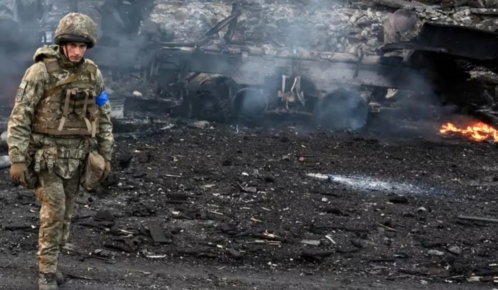

Nada a haver
Olhem ao seu redor, o que está acontecendo? Parece tudo calmo, claro, ignorando as tuas crises existenciais humanas. Não está calmo, sabe por quê? Pois na era dos homo sapiens existem guerras. Elas destroem muitos patrimônios (materiais e imateriais), vidas, tudo o que é necessário para uma sociedade se estabilizar ou continuar estável, e você está contribuindo, sim está!
Quando se consome determinado produto, apoias alguma potência ou grupo, fazes com que eles queiram mais poder (econômico, político, religioso) ou realizar atos ameaçadores aos indivíduos do planeta. Portanto parem de ser burros em falar que nada tem haver com isso ou com aquilo, tudo pode ser relacionado, só precisa de conhecimento e pensamento, pensem melhor em tuas escolhas políticas e de consumo, que pares de preguiça com a tua busca de conhecimentos, somente assim tereis chances de acabar com as guerras caro “cidadão comum”.